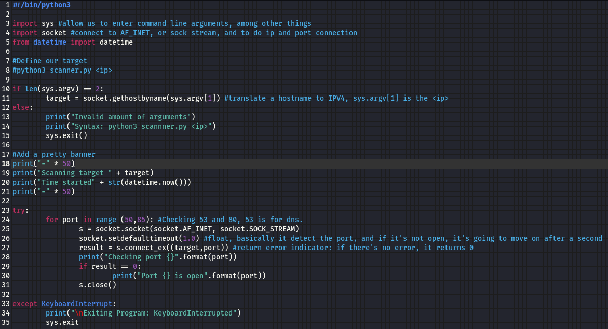

Time Stamp: 4:00:00



this means that the connection of IPV4 and the port is built, and put it in variable so that we don't have to type it again and again.

if socket.gaierror meanning that we can't connect to the hostname

This basically means the server is down. We can't connect to anything.
improvements can be made:
we can import artparse: so that we can declare specific ports
we can use threading &, so that it's going to be really fast.